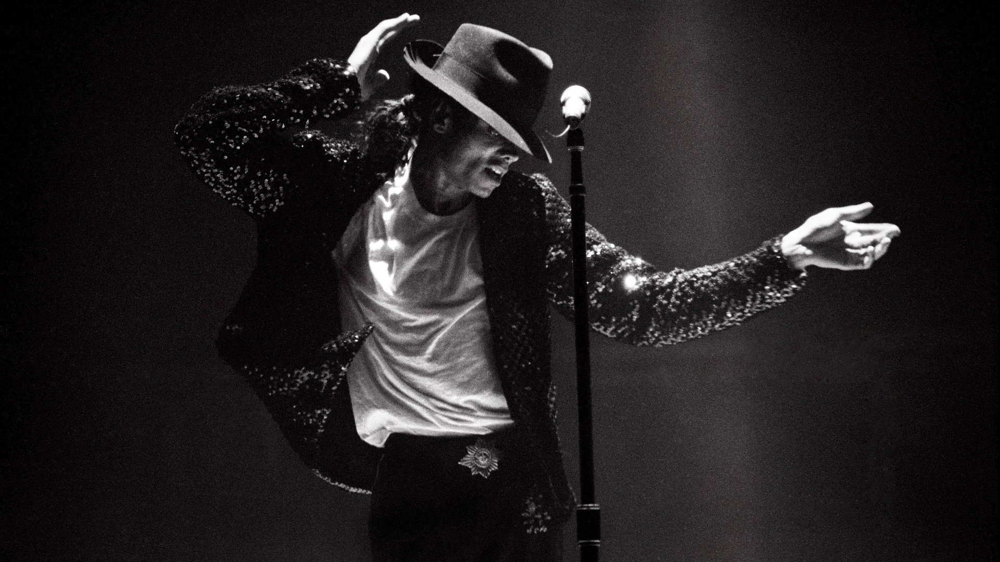
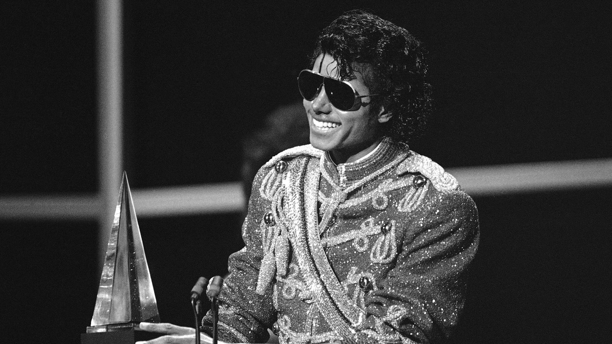
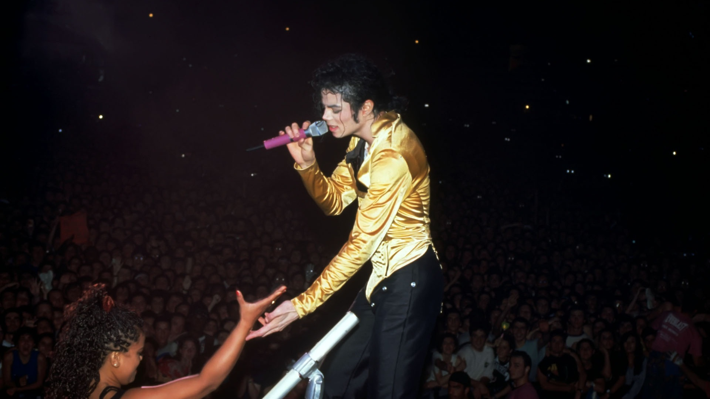
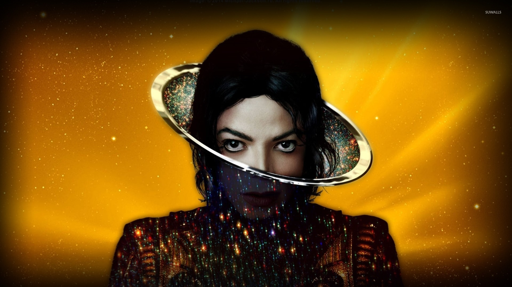
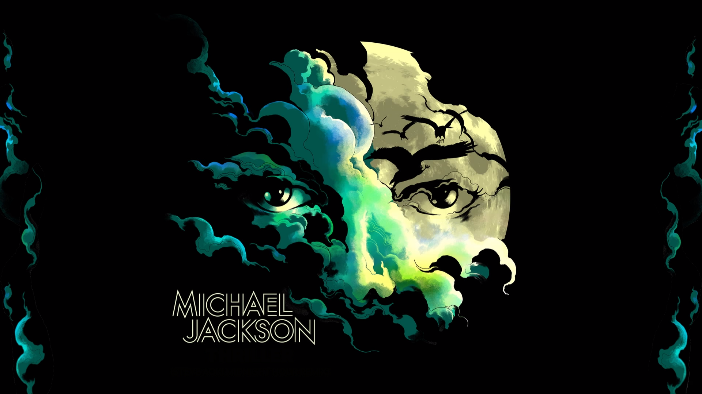

Djaz MJ in Lviv
Hits of the legendary Michael Jackson and
Stevie Vander performed by the best jazz musicians of Ukraine in Lviv!
"We are alive as long as they remember us. Jackson's music
is timeless, it still resonates with the souls of millions of
people around the world. "

Bluz MJ in Lviv
Hits of the legendary Michael Jackson and Stevie
Vander performed by the best Bluz musicians of Ukraine in Lviv!
"We are alive as long as they remember us. Jackson's
music is timeless, it still resonates with the souls of
millions of people around the world. "

Rock MJ in Lviv
Hits of the legendary Michael
Jackson and Stevie Vander performed by the best rock
musicians of Ukraine in Lviv!
"We are alive as long as they remember us. Jackson'
music is timeless, it still resonates with the souls of
millions of people around the world. "

Rap MJ in Lviv
Hits of the legendary Michael Jackson
and Stevie Vander performed by the best rap musicians of Ukraine in Lviv!
"We are alive as long as they remember us. Jackson's
music is timeless, it still resonates with the souls of
millions of people around the world. "

Hip-hop MJ in Lviv
Hits of the legendary Michael Jackson
and Stevie Vander performed by the best hip-hop musicians of
Ukraine in Lviv!
"We are alive as long as they remember us. Jackson's
music is timeless, it still resonates with the souls of
millions of people around the world. "

Mistery MJ in Lviv
Hits of the legendary Michael Jackson
and Stevie Vander performed by the best Mistery musicians of Ukraine in Lviv!
"We are alive as long as they remember us. Jackson's
music is timeless, it still resonates with the souls of
millions of people around the world. "